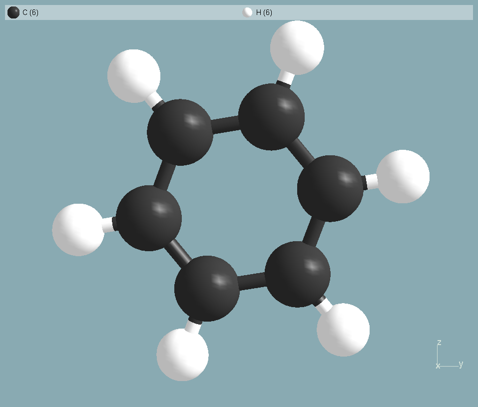
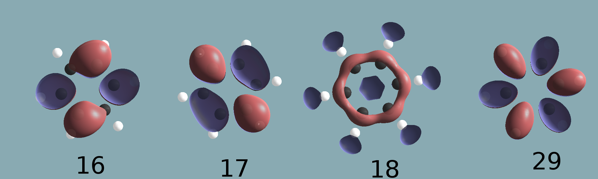
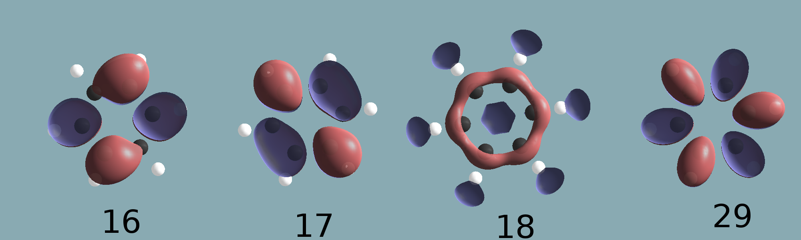
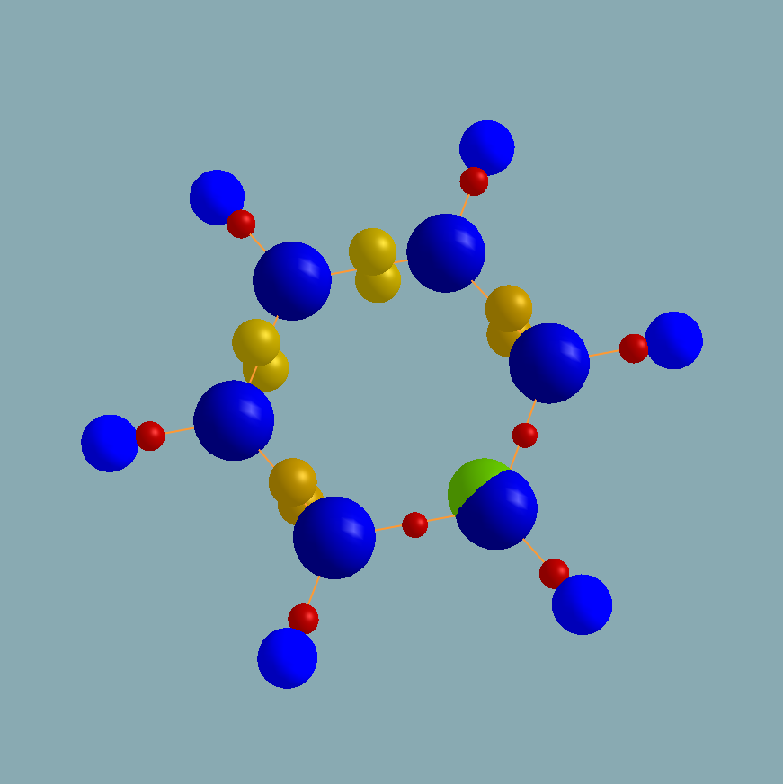

This lesson has been created for the current stable version. Earlier versions are fully capable of running this tutorial but input files may have to be changed according to possible earlier formats. This tutorial assumes that the reader is familiar with the basic concepts and variables of BigDFT. If this is not the case, the reader is advised to follow the basic tutorial and the tutorial on wavefunction vizualisation. It is further assumed, that BigDFT is correctly linked to a working ETSF-IO and NetCDF library, necessary to the reading and writing of the wavefunctions in the ETSF file format.
Post-processing Wannier functions: BigDFT and Wannier90
The purpose of this lesson is to introduce the post-processing tools developed to apply the Wannier transformation on the Kohn-Sham orbitals. It also aims provide clear instructions to view the resulting Wannier functions. The benzene molecule will highlight key concepts and difficulties of the procedure. This lesson should take roughly 60-90 minutes.
Introduction: post-processing strategy of BigDFT2Wannier
The first two tutorials have demonstrated the main capabilities of the BigDFT code, which are to solve the Kohn-Sham DFT equations using a Daubechies wavelet basis set with free, surface or periodic boundary conditions. The screen output was completely explained so that the reader can now easily extract important quantities, such has the total energy, the KS eigenvalues or the atomic forces. The third tutorial showed how to vizualise the eigenfunctions of the Kohn-Sham hamiltonian, the so-called KS orbitals. In this tutorial, we will try to extract, from these orbitals, information about there symmetry, the localization of the charge density and the character of the bonding.
This information is not directly obvious when vizualizing the KS orbitals since they are descrided in terms of extend Bloch states. Hence, they tend to incorporate many different symmetries, a consequence of hybridization, and to be fairly delocalized, obscuring the standard bonding representation present in chemistry. It is thus advantageous to pass to the Wannier representation which describes the orbitals in terms of localized orbitals.
In this goal, the BigDFT code was interfaced with the Wannier90 code. The Wannier90 code was developed (and is maintained) by A. A. Mostofi, J. R. Yates, Y.-S. Lee, I. Souza, D. Vanderbilt and N. Marzari to produce maximally-localised Wannier functions (MLWFs). The code minimizes the spread functional by using the steepest descent method with respect to a unitary transformation matrix of the orbitals. To do so, Wannier90 only needs the overlap matrix M(k) of the orbitals, but one can (and often must) also provide an input guess A, representing the projections of the orbitals over a set of atomic orbitals.
The interface is done by the BigDFT2Wannier code, which constructs the M(k) and A matrices from the wavefunctions produced by BigDFT. In this tutorial, we will study the Wannier functions of the benzene molecule.
Before reading further, it is probably preferable to launch the BigDFT code, because the generation of the required wavefunctions take roughly 15 minutes on 8 processors. To do this, go inside the Wannier directory and issue the command:
user@garulfo:~/Wannier/$ cd Wannier user@garulfo:~/Wannier/$ mpirun -np 8 ./bigdft
Overview of the lesson
In the first section, we will briefly discuss the Wannier90 code and its input file, the so-called winput file. We will only consider the input variables necessary for the generation of the input file, FileName.nnkp, needed by BigDFT2Wannier. For a more complete tutorial on the capabilities of Wannier90, please refer to http://www.wannier.org/doc/tutorial.pdf and the Wannier user guide. The structure of the NNKP file will also be discussed here.
After that, we will then discuss the generation of the BigDFT wavefunctions. In the first tutorial the self-consistent loop and the Davidson treatment of the KS hamiltonian where already explained. Similarly, the visualization of the wavefunctions was detailled in the third tutorial. Hence, we will not repeat those discussions here. Instead, we will directly discuss, in the second section, the different file formats of the wavefunctions and the input variable that control there writing on the disk.
The third section, will present the BigDFT2Wannier code by explaining the contents of the input.inter file. We will then explore the screen output and the various ouput files generated by BigDFT2Wannier.
Finally, we will show how to launch the Wannier90 code with all the required ingredients to produce the Wannier functions. The structure of the files and there visualization will be fully explained. The importance of the input guess projection matrix, A, will be presented in the last section.
Running Wannier90 in pre-processing mode
Let's begin our study of benzene with the generation of the input file for Wannier90, because it is here that we choose the number of MLWFs we will want to consider. This choice then impacts the number of virtual states we will want to include inside the Davidson treatment of BigDFT. Of course, the total number of states, occupied and virtuals, must be greater or equal to the number of MLWFs.
The winput file
The only restriction on the name of the Wannier90 input file is that it must have the extension .win. The
leading filename will be explicitly given to Wannier90 on the execution line. The structure of the winput is flexible
and operates by keyword blocks. Characters after !, or # are treated as comments. Most keywords have a default
value that is used unless the keyword is given an explicite value. Here the winput file is the C6H6.win file.
The structure of the winput file:
num_wann = 18 num_iter = 140  begin atoms_cart bohr C 9.399775 15.779609 13.434431 C 9.400225 14.113227 15.450517 C 9.399853 11.534323 15.015963 C 9.400177 10.620423 12.565499 C 9.399840 12.286709 10.549548 C 9.400187 14.865800 10.984134 H 9.399772 17.815978 13.779176 H 9.399857 14.831860 17.386990 H 9.399795 10.218079 16.607907 H 9.399830 8.584022 12.220846 H 9.399790 11.568177 8.613010 H 9.399891 16.181938 9.392107 end atoms_cart begin unit_cell_cart bohr 18.800000 0.000000 0.000000 0.000000 26.400000 0.000000 0.000000 0.000000 26.000000 end unit_cell_cart begin projections C:sp2 end projections mp_grid : 1 1 1 gamma_only : true begin kpoints 0.0 0.0 0.0 end kpoints ##################### # Plotting keywords ##################### wannier_plot = true #wannier_plot_list = wannier_plot_format = cube wvfn_formatted = true wannier_plot_supercell = 1 write_xyz = true translate_home_cell = true
The first keyword, num_wann determines the number of MLWFs we wish to generate. In our case, we know that
the benzene molecule is planar and should thus be correctly represented by sp2 orbitals. This means that we will have
three MLWFs for each carbon atom, which means we will have a total of 18 MLWFs. It is worth observing that this is superior
to the number of valence orbitals in our system, since we have 30 electrons. The second keyword num_iter defines
the number of iterations the code will execute to localise the MLWFs. We choose a conservative 140 iterations.
After these two keywords, there is the block that specifies the ionic positions and may be given in absolute Cartesian
coordinates atoms_cart or in fractional coordinates relative to the lattice vectors of the unit cell
atoms_frac. Here we will use atoms_cart. The first line in the block determines the units in which the coordinates are given and can be
either bohr or ang. Then each line contains the atomic symbol and the coordinates of each ion in the system.
The next keyword block, unit_cell_cart contains the cell lattice vectors defining the unit cell of our system.
Once again, the first line determines the units. The next three lines contain the Cartesian coordinates of each of the three
lattice vectors. Note that we must also define this block for molecules, because they also define the dimensions of the box in
which the MLWFs and there centers are calculated. These values can be taken from the output of BigDFT:
Shifted atomic positions, Atomic Units: grid spacing units:
1 C 9.39977E+00 1.57796E+01 1.34344E+01 23.499 39.449 33.586
2 C 9.40023E+00 1.41132E+01 1.54505E+01 23.501 35.283 38.626
3 C 9.39985E+00 1.15343E+01 1.50160E+01 23.500 28.836 37.540
4 C 9.40018E+00 1.06204E+01 1.25655E+01 23.500 26.551 31.414
5 C 9.39984E+00 1.22867E+01 1.05495E+01 23.500 30.717 26.374
6 C 9.40019E+00 1.48658E+01 1.09841E+01 23.500 37.165 27.460
7 H 9.39977E+00 1.78160E+01 1.37792E+01 23.499 44.540 34.448
8 H 9.39986E+00 1.48319E+01 1.73870E+01 23.500 37.080 43.467
9 H 9.39979E+00 1.02181E+01 1.66079E+01 23.499 25.545 41.520
10 H 9.39983E+00 8.58402E+00 1.22208E+01 23.500 21.460 30.552
11 H 9.39979E+00 1.15682E+01 8.61301E+00 23.499 28.920 21.533
12 H 9.39989E+00 1.61819E+01 9.39211E+00 23.500 40.455 23.480
Shift of= 9.39992E+00 1.29777E+01 1.32625E+01 H grids= 0.4000 0.4000 0.4000
Box Sizes= 1.88000E+01 2.64000E+01 2.60000E+01 47 66 65
Extremes for the high resolution grid points: 19<28 18<48 18<47
The projections block defines a set of localised functions, typically atomic orbitals, used to generate an initial
guess for the unitary transformations. It is this data that will generate the projections inside the FileName.nnkp file used by
BigDFT2Wannier. In the present case, we are specifying three hybridized sp2 atomic orbitals for every Carbon atom. Go see the
Wannier user guide or the
C6H6_15.win file for alternative ways of writing this information.
The next two keywords define the K-point grid. The mp_grid keyword gives the dimensions of the Monkhorst-Pack
k-point mesh, while the gamma_only logical tells Wannier90 to use an algorithm that exploit the fact that the
wavefunctions are real. In our case, since we are simulating an isolated molecule, we set the Monkhorst-Pack grid to one
point and indicate that we are using only the Γ point. After these two keywords comes the kpoints block
which explicitly gives the fractional coordinates, relative to the primitive reciprocal lattice vectors, for every k-point.
Once again, in our case we indicate only the Γ point.
Finally the last eigth lines of the winput file contain flags controling the writing of the output files of Wannier90 and are mostly self explanatory, but here is a small snipet of there definition:
- The
wannier_plotvariable is a logical that controls the writing of the MLWFs, by default it is false. - The
wannier_plot_listvariable, which is commented right now, contains the indexes of the Wannier functions we will want to plot. It's default value contains the indexes of all the MLWFs. - The
wannier_plot_formatvariable is a character string that controls the output format of the MLWFs. We set it to cube to ease the vizualisation with V_Sim. The other option and default is xcrysden. - The
wvfn_formattedvariable controls the way the UNK file is going to be read. This is only necessary when writing the MLWFs to disk because otherwise the UNK files is not needed. When it is true, the UNK is read as a formatted (i.e. ASCII) file. - The
wannier_plot_supercellvariable defines the super-cell which we want to plot. This is practical for periodic systems, but for now we only consider the original cell. - The
write_xyzvariable determines if the atomic positions and the Wannier centers are written to a XYZ file namedFileName_centers.xyz, in our present case it will beC6H6_centers.xyz. A second file is produced, namedFileName.datwhich contains the spreads and occupation of each MLWF and will be explained in another section. - The
translate_home_cellvariable determines if Wannier90 translates the finale MLWF centers to the home unit cell when writing the xyz file.
Running Wannier90 in pre-processing mode
Having defined our winput file, we can now run Wannier90 in pre-processing mode to generate the NNKP file, in our case it will be named
C6H6.nnkp, containing all the information necessary to build the correct M(k) and A matrices. To command is the following:
user@garulfo:~/Wannier/$ ./wannier90.x C6H6 -pp
where ./wannier90.x should be replaced by the correct path on your machine to the Wannier90 main executable, C6H6
is the FileName that is used to read the winput file and generate all the output files and the -pp is an option telling
Wannier90 to run in pre-processing mode. The result of this command should be the production of the file C6H6.nnkp. It also
produces a C6H6.wout file containing all the information pertaining to the system and the calculation in a user friendly format.
The reader should take some time to go inspect both files. Only the NNKP file is going to be explained here, since it is one of the input files
of the BigDFT2Wannier code.
The NNKP file contains the following information:
calc_only_A :a logical defining if we only calculate the input-guess matrix. Since BigDFT2Wannier calculates the inputguess matrix efficiently, using the orbitals written on the wavelet basis set, this logical is always set to false (i.e. we have not included the appropriate keyword in the winput file).begin real_latticefollowed by the real lattice coordinates written in angstroms.begin recip_latticefollowed by the reciprocal lattice in reverse angstroms.begin kpointsfollowed by the number of k-points and their fractional coordinates. In our case, we have only the &Gamma point.begin projectionsfollowed by the number of projection centers (i.e. atomic orbitals) to create. Each atomic orbital is then defined by two lines. The first one gives the fractional coordinates of its center and then three integers defining l, mr et r (the quantum numbers defining the atomic orbital). The first two quantum numbers specify the angular part Yl,mr(&theta,&phi) and the last one the radial part Rr(r). Finally, the second line defines the z-axis used to define the angle &theta, the x-axis defining &phi and the extent of the radial function. In our case, we can see that we put three functions per carbon atom. These functions have a negative l number meaning that we are using the hybridized orbitals: -1 for sp, -2 for sp2 and -3 for sp3.begin nnkptsfollowed by the number of nearest neighbours belonging to each k-point of the Monkhorst-Pack mesh. For each of these neighbors, we then include a five integer line. The first integer is the number of the kpoint studied. The second number points to the periodic image of the nearest neighbour. The last three integers specify the G-vector, in fractional coordinates, needed to bring that image into the original cell. We can see that in our case we have three nearest-neighbour kpoints, even if we are simulating an isolated system. This is so because Wannier 90 uses finite difference on the kpoints to evaluate the gradient of the spread functional. Hence, we must provide three different out of zone &Gamma points.begin exclude bandsfollowed by the total number of bands to be excluded from the calculation of the overlap and projection matrix and a line per excluded band specifying its index.
Exercise 1:
Since we are only interested in the bonding characteristic of our benzene molecule, the naive approach would be to consider only the occupied
orbitals. This is done in the second Wannier90 winput file, C6H6_15.win, in which we choose to localize only 15 MLWFs since this
is the number of valence electrons in our system. By taking a look at this winput file can you tell what the problem will be? If not, generate
the MLWFs with this winput file using the procedure detailed in this tutorial and take a look. Do you see the problem?
In this case, we cannot distribute the 15 MLWFs on the 6 carbon atoms without breaking the rotational symmetry of the benzene molecule. This will break the aromaticity of the benzene ring. We can see this in the projection block: 3 of the carbon atoms possess 3 projections while the remaining 3 atoms only have two projections. Hence, we will obtain MLWFs which exhibits the Kekulé structure: a structure with alternating double and single bonds. Hence, if we want to study the bonding character of benzene, we could have missed its aromatic character.
Note that there is two different degenerate sets of MLWFs corresponding to the Kekulé structure. We can obtain the second one by changing the number of projectors on each atom: we put three projectors for the carbons which had two projectors and the inverse for the others. Of course, the correct aromatic structure of benzene is just a linear combination of these two degenerate states. Further in this tutorial, we will see how to directly obtain the correct aromatic character of benzene.
One could also forgo completely the need for an input guess by not providing a FileName.amn file to Wannier90.
Thus, the symmetry of the structure would be preserved and the minimization procedure could lead to a symmetric result. If this is done,
on obtains functions, represented in the upper part of figure 1 of Thygessen et al.,
which are not completely satisfactory either. In this case, the symmetry of the system is still reduced (in fact we find the same Kekulé structure)
and 6 of the functions are transformed into a mix of the &sigma and &pi orbitals.
Generating wavefunctions with BigDFT
The third tutorial already explores the generation and vizualisation of wavefunctions with BigDFT, so we will only give a quick recap of the main points. The occupied orbitals are generated by the basic self-consistent loop and can be written in two different kinds of file formats. The first is a collection of BIN files, which are binary files of the coefficients of the Daubechies wavelets. Each file represents an occupied orbital. These files can be transformed into the cube format, which are basically ASCII files containing values of the wavefunctions in every XYZ point in the box, which is readable by many vizualisation software, like V_Sim.
The second is the ETSF file format, which is also a binary file that stores the wavefunctions in the form of coefficients for the Daubechies wavelet basis. In this case, there is only one file containing all the KS orbitals. Since this file format is based on the NetCDF library, the produced files are machine-independent, yielding perfect transferability, and they are self-describing leading to diminished reading and writing times. They are thus preferred for the production of post-processing tools. It is this format that we will use in this tutorial.
The choice of these file formats is made at the second integer of the 10th line of the input.dft, first boldfaced line.
The ouput_wf integer can have the following values:
- 0, the wavefunctions are not written
- 1, the wavefunctions in debauchy wavelets are written in ASCII
- 2, the wavefunctions are written in the BIN format
- 3, the wavefuctions are written in the ETSF format
0.40 0.40 0.40 hx,hy,hz: grid spacing in the three directions 6.0 8.0 crmult, frmult: c(f)rmult*radii_cf(*,1(2)) gives the coarse (fine)radius around each atom 1 ixc: exchange-correlation parameter (LDA=1,PBE=11) 0 0.000 ncharge: charge of the system, Electric field 1 0 nspin=1 non-spin polarization, mpol=total magnetic moment 1.E-4 gnrm_cv: convergence criterion gradient 50 10 itermax,nrepmax: maximum number of wavefunction optimizations and of re-diagonalised runs 6 6 ncong, idsx: # CG iterations for the preconditioning equation, length of the diis history 0 dispersion correction functional (values 1,2,3), 0=no correction 0 3 0 InputPsiId, output_wf, output_grid 0.0 30 rbuf, ncongt: length of the tail (AU),# tail CG iterations 30 20 20 davidson treatment, no. of virtual orbitals, no of plotted orbitals 2 verbosity of the output 0=low, 2=high T disable the symmetry detection
The virtual orbitals are generated by the Davidson algorithm of the BigDFT code. They are written in the same format has the occupied wavefunctions. The variables controlling the activation of the Davison method and the number of virtual states to consider are on the second boldfaced line, line 12. The first integer determines the total number of virtual states to consider in the treatment, while the second number controls the number of virtual states which are used in the convergence during the Davidson iterations. Usually we do not include a few of the highest lying bands to increase the stability of the algorithm. The third number is only used to control some secondary output files of BigDFT and does not concern us here.
Now, in the case of our sp2 benzene, we know we want to localise 18 MLWFs. Since we only have 15 occupied orbitals, we must choose at least 3 virtual orbitals to include in our procedure. Without thinking any further, we could simply consider only the three lowest virtual orbitals. But we will see in the next sections that this choice is not optimal for our case and we will discuss why later on. To save some calculation time, we will directly choose a big number of virtual states, say 30, and we will only converge the first 20 of them.
All the wavefunction files are written inside the data/ directory, that is created during the execution of BigDFT. In the
ETSF format, the occupied orbitals are stored inside the wavefunction.etsf file while the unoccupied are stored inside the
virtuals.etsf file. If you launched BigDFT at the beginning of this tutorial, it is probably finished now.
Exercise 2:
By referring to the third tutorial, view with V_Sim the Highest Occupied Molecular Orbital (HOMO) of benzene and a few of the other occupied states. Do they allow an easy interpretation in terms of bonds?
 

In the first figure, I have represented three occupied KS orbitals. Negative zones are depicted in blue, while positive zones are depicted in red. The 15th orbital is the Highest Occupied Molecular Orbital (HOMO) of our benzene ring. We can see that the orbitals are fairly delocalized, i.e. they are distributed amongst many atoms. We can see large extended portions of same sign, signifying that the functions are bonding in nature. In this regard, we see that the HOMO is bonding and that it is degenerated twice with both eigenstates being occupied. We can see that most of the occupied states are bonding states and that most of the virtual states, represented on the second figure, are anti-bonding states. That is to say that we find the benzene molecule to be stable. Unfortunately, this extended nature of the KS orbitals renders the simple interpretation of the bonds in the chemical picture difficult to vizualize.
Our choice of virtual orbitals may seem kind of strange. They where chosen because these functions are going to be used in the next parts of this tutorial. We will begin by using the naive approach, using only the three lowest lying states to construct our MLWFs. These three KS orbitals are represented here: 16, 17 and 18. It is obvious that the third unoccupied state is of different character then the first two. Thus, it will not mix well with them. We will see that the 14th unoccupied state, state 29, is a better choice to build our MLWFs.
Using BigDFT2Wannier
Now that we have generated the wavefunctions and the NNKP file, we can generate the overlap and projection matrices needed by Wannier90 with the
BigDFT2Wannier code. We only need to produce one last input file, the input.inter file
used to condition the BigDFT2Wannier run. Like other
BigDFT input files, the name is mandatory and the structure is fixed. The first few lines are pretty self explanatory, so let's focus on the last
three lines.
F 20 3 # Pre-check, no. of virtual orbitals for pre-check, no. of virtual orbitals used to write Amn and Mmn matrices T F F F # allow the writing of UNK and of the .cube files for atomic orbitals, their angular parts and their radial parts 94 132 130 # number of points for each axis in the cubic representation used by BigDFT (needed to use Wannier90) 1 2 3
The first of these lines concerns what we call the pre-check and this will be explained in the last section of this tutorial.
It basically activates an algorithm for choosing the more suitable virtual orbitals to construct the MLWFs. For now, we have deactivated it by
specifying the first logical to false. The next two integers are mandatory, even if we do not activate the pre-check. The first one specifies the total
number of virtual states which are contained in the virtuals.etsf file. The second is the real number of virtual states which are going to
be used in the Wannier process.
The next line controls some extra ouput of BigDFT2Wannier. The first logical controls the writting of the UNK file, which is only required by Wannier90
when one wants to plot the MLWFs. The UNK is a binary file which contains all the relevant orbitals written on a simple rectangular grid, similar to
the standard .cube format. The three other logicals on this line control the writting of the atomic orbitals (and its components) used
for our projection matrix. They are set to false for now.
We must then give the dimension of the rectangular grid used to generate the .cube files. This value also is going to be used
by Wannier90 to write the MLWFs. This value should correspond to the interpolating scaling function grid used in the BigDFT calculation. These values can
be found on the same boldfaced line of the screen output of BigDFT, see section 1. You simply have to multiply by 2 the last 3 integers
of that line, since these integers correspond to the dimension of the wavelet grid which is 2 times coarser.
Finally, the last line contains the indexes of the virtual states we wish to use in the rest of the calculation. For now, we only use the three lowest lying virutal states. For large systems, this could be a pain to write down explicitly. We will see in the last section, that we can specify a pre-check option that determines automatically the virtual states and writes them down here.
With this file completely explained, we can now launch BigDFT2Wannier in parallel using the command:
user@garulfo:~/Wannier/$ mpirun -np 8 ./BigDFT2Wannier
The BigDFT2Wannier code will go read the orbitals inside the data/ directory and the various input files in the main calculation directory.
It will then output to screen a summary of all the input variables followed by the various steps of the calculation. When the pre-check is turned off,
the first step is the calculation of the projection matrix. The code outputs the norm of the wavefunctions, when projected on the atomic orbitals subspace.
!==================================! ! Calculating amnk=<psi|sph_har> ! !==================================! wavefunctions need NO reformatting Band sqrt(amnk_tot)= 1 0.904039 2 0.852170 3 0.824487 4 0.735118 5 0.692532 6 0.539123 7 0.660497 8 0.535790 9 0.589599 10 0.465229 11 0.765797 12 0.644180 13 0.361898 14 0.742199 15 0.739143 16 0.655115 17 0.649666 18 0.206599
These norms indicate the fraction of the wavefunctions which are well represented by our chosen local functions. It should be roughly close to one, the difference coming either from the extended nature of the KS wavefunctions which is not captured by our functions or from that fact that we do not include the right symmetries for our atomic orbitals. For the first two virtuals states, corresponding to states 16 and 17, the norm is satisfactory (i.e. similar to some of the occupied states). The last one is pretty small and could be a problem (well we are going to see that it is the case).
After the calculation of the projection matrix, it is written to the file FileName.amn. You should go check the C6H6.amn file.
The first line of this file is just a comment with the date
of generation of the file. The second line contains the number of states, the number of kpoints and the number of projections respectively. The following
line contains the projection matrix. The first three columns contain the band index, the projection index and finally the corresponding kpoint index.
The next two real values correspond to the real part and the imaginary part of the projection. In our case, since we are treating a finite system, we only
have 1 kpoint and the projections are all real.
The code then computes the overlap matrix. Once again, the norm of the projections are printed to screen for every kpoint. In this case, the code computes the overlap matrix for three kpoints corresponding to out of cell &Gamma points. This is done because the Wannier90 code uses a finite difference procedure on the kpoints to compute the spread functional, see I. Souza, N. Marzari and D. Vanderbilt, Phys. Rev. B 65, 035109 (2002) for more information. These kpoints where selected by Wannier90 and they explicitly appear in the NNKP file. Once again, the norms of the overlap should tend to one.
!==================================! ! Calculating mmnk=<psi|psi> : ! !==================================! The values of sqrt(mmnk_tot) check the normalization in each band. They must tend to their lower limit value, which is equal to 1 : k-point coordinates : 0 1 0 Band sqrt(mmnk_tot)= 1 0.998326 2 0.995886 3 0.997104 4 0.993827 5 0.989801 6 0.990340 7 0.971349 8 0.980333 9 0.959714 10 0.980271 11 0.995423 12 0.947911 13 0.957421 14 0.975834 15 0.994493 16 0.893391 17 0.924025 18 0.527897
After the computation of the overlap matrices, the are written into the file FileName.mmn. You should go inspect the C6H6.mmn file.
The first line of this file is once again a comment
containing the date and time of generation. The second line contains three integers defining the number of orbitals (NB), the number of kpoints
(Nkpt) and the total number of nearest-neighbor kpoints (Nnn). In our case, we have NB=18 orbitals, only Nkpt=1
kpoint (the &Gamma point) and Nnn=3 nearest-neighbors (out of zone &Gamma points). Then there are Nkpt*Nnn blocks of data.
Each block containing NB*NB+1 lines. The first line of each block is made of 5 integer numbers. The first one defines one k-point and
the second, one of its nearest neighbor. The next three represent the translation read in the FileName.nnkp file. The next NB*NB lines
of each block define the real and imaginary parts of the matrix element Mmn(k). Note that even if our system is finite, the overlap matrices are complexe, because
we are projecting with out of cell kpoints.
The next step of the code is optional. When prompted to do so, BigDFT2Wannier writes the chosen orbitals in a file named UNKnkp.s file, one for each
kpoint, where nkp is the number of the kpoint and s is the spin number (s=1,2). In our case, we obtain a UNK00001.1 file. These files are formatted
cube files. They are needed by Wannier90 only if we want to plot the MLWFs.
Generating Wannier functions with Wannier90
All the Wannier90 required input files have now been generated. We can now launch, without any further consideration, the command:
user@garulfo:~/Wannier/$ wannier90.x C6H6
The calculation should take roughly 2 minutes (most of the time is devoted to generating the MLWFs for plotting). Wannier90 should have produced a ouput file, named
FileName.wout, a file containing the MLWF centers, called FileName_centres.xyz, a file containing the occupations and spread of each MLWF for
the use of V_Sim, called FileName.dat and finally some files containing the MLWFs in the cube format, called FileName_nmlwf.cube where nmlwf is
the number of the corresponding MLWF. Remember that in our case, FileName = C6H6.
Let's look at the output file, C6H6.wout. The file starts by the summary of the input variables used in the calculation. The users should check here that no errors
have crept into there input file. After that comes the information of the steepest descent iterations. For every iteration and every MLWF, the centers and spread is written.
After this, a summary line containing the variation of the norm of the gradient, total spread of the MLWFs and the time in seconds is written.
------------------------------------------------------------------------------
Cycle: 1
WF centre and spread 1 ( -4.901426, -4.799708, -6.458966 ) 0.72092486
WF centre and spread 2 ( 4.927570, -5.882173, -6.323157 ) 2.24577411
WF centre and spread 3 ( -4.688859, -5.746846, 6.660140 ) 0.84213847
WF centre and spread 4 ( -4.780431, -5.883628, -5.618563 ) 0.82279713
WF centre and spread 5 ( 4.948963, -6.260065, -5.252836 ) 1.33471720
WF centre and spread 6 ( -4.500588, 6.578242, -5.382289 ) 1.30336945
WF centre and spread 7 ( 4.966471, 6.907991, -5.650058 ) 0.88241334
WF centre and spread 8 ( 4.888856, 5.966342, -5.429622 ) 1.22475168
WF centre and spread 9 ( -4.876081, -6.867074, -6.698926 ) 7.98394798
WF centre and spread 10 ( -4.972239, 6.101105, -6.371205 ) 1.35132088
WF centre and spread 11 ( -4.949138, 5.017045, 6.691037 ) 0.80736734
WF centre and spread 12 ( -4.620012, 6.068400, -6.457999 ) 1.91180491
WF centre and spread 13 ( -4.729672, 6.497547, 6.020587 ) 1.86245548
WF centre and spread 14 ( -4.942598, 6.131961, 6.190206 ) 0.70752094
WF centre and spread 15 ( -4.844149, 6.365452, 4.993258 ) 0.74787532
WF centre and spread 16 ( -4.913376, -5.535890, 5.356701 ) 0.68286058
WF centre and spread 17 ( 4.947721, -6.669622, 5.814110 ) 0.68780927
WF centre and spread 18 ( -4.815664, -6.089129, 6.050766 ) 1.65919312
Sum of centres and spreads ( -37.854651, 1.899950, -11.866817 ) 27.77904205
1 -0.105E+02 27.7790420516 0.01 <-- CONV
O_D= 0.0000000 O_OD= 7.3134642 O_TOT= 27.7790421 <- SPRD
Delta: O_D= 0.0000000E+00 O_OD= -0.1046719E+02 O_TOT= -0.1046719E+02 <-- DLTA
A good way of checking the convergence is to use the grep command by searching for the CONV string.
user@garulfo:~/Wannier/$ grep CONV C6H6.wout
+--------------------------------------------------------------------+<-- CONV
| Iter Delta Spread RMS Gradient Spread (Ang^2) Time |<-- CONV
+--------------------------------------------------------------------+<-- CONV
0 0.382E+02 38.2462366518 0.01 <-- CONV
1 -0.105E+02 27.7790420516 0.01 <-- CONV
2 -0.328E+01 24.4999230396 0.01 <-- CONV
3 -0.265E+00 24.2353241229 0.01 <-- CONV
4 -0.185E-01 24.2168071343 0.01 <-- CONV
5 -0.376E-02 24.2130471576 0.01 <-- CONV
6 -0.133E-02 24.2117156100 0.01 <-- CONV
7 -0.604E-03 24.2111118363 0.01 <-- CONV
[...]
134 -0.284E-13 24.2104410510 0.04 <-- CONV
135 0.000E+00 24.2104410510 0.04 <-- CONV
136 -0.284E-13 24.2104410510 0.04 <-- CONV
137 0.000E+00 24.2104410510 0.04 <-- CONV
138 0.000E+00 24.2104410510 0.04 <-- CONV
139 0.000E+00 24.2104410510 0.04 <-- CONV
140 0.000E+00 24.2104410510 0.04 <-- CONV
We can see that the spread of our orbitals decreases from 38.24 Ang^2 to 24.21 Ang^2 during the steepest descent and that our 140 iterations where sufficient to get a good convergence, i.e. the norm of the gradient vanishes. Looking at the individual spreads, we see that the last MLWF has a spread larger then all the rest, showing that we probably have a problem. If the symmetry of our system is obeyed, this state should have been like the others or it is completely delocalized.
------------------------------------------------------------------------------ Occupation and inoccupation rate of each band defined by occ(iw) and inocc(iw) with iw=1,num_wann : iw occ(iw) inocc(iw) 1 0.997673 0.002327 2 0.806244 0.193756 3 0.998971 0.001029 4 0.806410 0.193590 5 0.997668 0.002332 6 0.785041 0.214959 7 0.785153 0.214847 8 0.997673 0.002327 9 0.018485 0.981515 10 0.785539 0.214461 11 0.997681 0.002319 12 0.785432 0.214568 13 0.807566 0.192434 14 0.807507 0.192493 15 0.997789 0.002211 16 0.997867 0.002133 17 0.998923 0.001077 18 0.628377 0.371623
After the minimization of the spread, the wouput file contains information on the occupation of the MLWFs, that is to say the percentage of fully occupied and unoccupied orbitals used in there construction. We see that we have 8 states almost completely occupied (occupation > 99%), 8 states which are around 80% occupation, our anomalous state has 62 % occupation and a state which is totally unoccupied (occupation < 2%). This distribution of charge seems strange. So let's vizualise the results.
Visualizing the results with V_Sim
Vizualizing the isosurfaces of one MLWF
Since the MLWFs produced by Wannier90 are in the cube format, they can be viewed with V_Sim just like the wavefunctions of BigDFT. Instead of repeating here the excellent tutorial on vizualisation of wavefunctions, we will simply explain some extra options of V_Sim of particular interest in the Wannier case. These options will be the colorisation and automatic scaling of the atomic sizes which are going to be used for the Wannier centers.
So for now, let's begin with an exercise.
Exercise 3:
Repeat the operations of the third tutorial to view most of the MLWFs. Are they what you where expecting? Do they reproduce the simple bonding structure found in chemistry handbooks?
Firstly we see that we have 17 partly occupied MLWFs, a number which cannot obey the six-fold symmetry operations of benzene. By plotting them all, we find a strange structure formed of what seems to be 10 &sigma orbitals in the C-C ring, 6 &sigma orbitals between the C-H and one pz on a single carbon atom.
The C-H bonding orbitals seems to obey the correct symmetry, it seems correctly centered on the C-H bond length with most of the electronic density between the two atoms. But we can see that the orbitals overlap more fully the hydrogen atoms and do not extend completely around the carbon atoms. These orbitals hence ressemble closely to what one can expent from polar covelent bonds in the chemistry picture. The two single &sigma orbitals between two carbon atoms, in the bottom right of the ring, also seem to correspond perfectly to the standard picture of a non-polar covalent bond: all the electronic density is contained between the two atoms.
What is truly wrong in our picture is the presence of the four double &sigma orbitals between the C-C atoms. They completely break the symmetry of the system. The word "wrong" is probably misused, because we must remember that the Wannier transformation is not unique and that all our solutions give a valid representation of the wavefunction, i.e. does not change the physical observables. In fact, we may suspect that we have six such degenerate set of MLWFs corresponding to a simple rotation of the pz orbital around the ring. We could then construct the symmetric representation by a linear combination of these states. We can thus wonder how we broke the symmetry, thus choosing this specific set of MLWFs. The answer is appearent if you look at the third unoccupied Kohn-Sham orbital. You will see that it corresponds to a different symmetry group then the rest of the orbitals. By inserting only one element on another symmetry group, we have contaminated our results, resulting in the breaking of the symmetry.
Vizualizing the centers, spread and occupation
 A more convenient way of viewing the MLWFs is to plot only there centers within the structure of the molecule. To get the maximum of information, each center
can be colored depending on its occupation and represented by a sphere with a radius proportional to its spread. This is easily done using V_Sim. Begin by loading
the FileName_centres.xyz file. This files contains all the atomic positions and the positions of the Wannier centers. The centers which are unocupied
(<2%) are commented by default.
To toggle the automatic features of the centers, you must open the "Colorize with data" tab of V_sim. Click on the little box named "Use color scheme"
on the first line. Then click on the "Open" button just below it. Go choose the FileName.dat file created by Wannier90. This files contains two
columns: the first one contains the occupation in percentage and the second the spread normalized to one. Once again, the unoccupied MLWFs are commented. Now, in the
" Normalize input" section, click on "manual" and enter the value "0" for the minimum of "Input data bounds". Then
in the "Define the color scheme" section, click on the little plus button named "More options". This will reveal three lines controling the coloring.
For the first, click on the scrolling menu and choose "Col. 1". This will apply the color scheme on the Wannier functions and the atoms.
You may then click on the box named "Scale shape according to" placed at the bottom of the tab. Then click on the scrolling menu next to it and choose "Col. 2". This will automatically change the size of the Wannier centers depending on there spread while preserving there ratio. The smallest spheres corresponding to the smallest spreads. To change the overall size of the Wannier centers, you must go in the "Set elements cracteristics" tab and change the radius of element "X", which is the default symbol associated to the Wannier centers.
The result for our benzene is showed on the figure to the right (where I have reduced the radii of the atoms and activated the bonds). Firstly, the atoms are all colored as if they where unoccupied MLWFs, in this case they are deep blue. We can now see that we have a problem. The symmetry of our system is not respected by the MLWFs. For instance, we see there is two yellow centers, indicating 80% occupation, for four of the bonds while the remaining two bonds possess only one completely occupied function. On the atom with the two single bonds, we have a big green center indicating a functions which as a great spread (delocalized) and is only roughly 30% occupied, which is the pz orbital viewed previously. This does not correspond at all to the simple chemical picture.
The only real success is the centers between the carbon atoms and the hydrogen atoms. In this case, we find completely occupied, deep red, functions respecting the symmetry of the system. They reside closer to the hydrogen atom which reflects the polar nature of this covalent &sigma bond.
Importance of the input guess: Case study of benzene
So what was the problem with the previous calculation? The problem stems from our choice of the unoccupied orbitals which are included in the steepest descent procedure. Right now, we have used only the three lowest lying unoccupied states. It was shown by Thygesen, Hansen and Jacobsen , that to build maximally localized, partly occupied Wannier functions, one must take great care to include the bonding and anti-bonding states to insure the bonding-antibonding closing relations. For benzene, it so happens that the third unoccupied state does not have the correct symmetry to effectively mix with the other states. So, our subspace was not complet and the minimization did not perform has wanted.
To fix this, we can use the input guess. The basic idea is to add a preliminary procedure that inspects a wide range of unoccupied states and selects the ones obeying the closing relations.
As of now, the codes selects the states which miximizes there norm when projected unto the atomic orbitals. This condition ensures that the selected states possesses the correct character.
To activate this procedure, we must set the pre-check variable to true in the input.inter file. Then we must specify the number of unoccupied states to scan followed by the number
of states to select.
C6H6 # name of the .win file etsf # format of the BigDFT wavefunctions: cube or binary 15 # number of occupied orbitals T 20 3 # Pre-check, no. of virtual orbitals for pre-check, no. of virtual orbitals used to write Amn and Mmn matrices T F F F # allow the writing of UNK and of the .cube files for atomic orbitals, their angular parts and their radial parts 94 132 130 # number of points for each axis in the cubic representation used by BigDFT (needed to use Wannier90)
You can now relaunch BigDFT2Wannier. You will notice now that the ouput has changed. After the echo of the input variable, there is a new pre-check section. It resembles the ouput related to the projections, but it only contains the norms for ALL the virtual orbitals. It then writes the number and norm of the selected virtual states which are used in the rest of the Wannier procedure.
!==================================! ! Calculating amnk=<virt|sph_har> ! ! in pre-check mode : ! !==================================! Virtual band amnk_guess(nb)= 1 0.655115 2 0.649666 3 0.206599 4 0.157096 5 0.212638 6 0.115985 7 0.200182 8 0.182053 9 0.148927 10 0.166958 11 0.168046 12 0.201564 13 0.082550 14 0.597867 15 0.071562 16 0.085317 17 0.092332 18 0.209833 19 0.207782 20 0.145454 These are the virtual bands to use to construct the actual Amn and Mmn matrices : Band sqrt(amnk_guess)= 1 0.655115 2 0.649666 14 0.597867 !==================================! ! Calculating amnk=<virt|sph_har> ! ! in pre-check mode done ! !==================================!
The selected states are the same two lowest lying virtual states and the 14th virtual state. The norm of this last state is now similar to the norm of the
other virtual states. If you use V_Sim to vizualize this state, or see the answer of exercise 2, you will find that is has the same symmetry has the previous two.
Thus we reproduce the results from the previously
mentionned Thygessen paper. If you look at your input.inter file, you will see that the last line containing the indexes of the selected states has changed.
You can now relaunch Wannier90, without changing a thing. If we look at the converged spread, it is now 15.305 Ang^2, which is much smaller then the previous 24.21 Ang^2 using the three lowest lying states. We can thus conclude that using the 14th state allows for a better localisation of the MLWFs. Looking at the occupations, we see that the MLWFs break down into 2 groups: a first group with 12 functions that are completely occupied and a second group of 6 functions which are half filled. Is this odd? Let's look at the generated MLWFs to find out.
Exercise 4:
Looking at there occupations, isosurfaces and centers, can you interpret the new MLWFs ? Does this fit the simple bonding structure found in chemistry handbooks?
We can see on the figures that the 12 completely occupied MLWFs, which have deep red centers, correspond to the purely covalent &sigma orbitals between the C-C pairs and C-H pairs. From the position of the centers, we can see that the bonds are equally spaced between the C-C pairs signifying that this is a non-polar bond. The C6 symmetry of the molecule is correctly represented by the MLWFs, which is a great improvement compared to the previous results.
We have also preserved the correct results for the the C-H centers: they are still completely occupied and are positionned closer to the hydrogen atom owing to its stronger attraction force. We can thus conclude that these 12 functions do not depend on the unoccupied subspace. But recall that we did not find all the C-C &sigma bonds when using the lowest lying states and that the ones we did find where deformed. This implies that previous results where polluted by the third unoccupied state which artifically contributed higher symmetry states to these MLWFs.
Now we can try to interpret the six big green centers. We see from there isosurfaces that they correspond to perfect pz type orbitals not exactly centered on the carbon atoms. There occupation is almost exactly one half and there spread is fairly large. This represents the delocalized &pi orbitals of benzene which have 3 electrons shared amongst the whole ring. Thus in the MLWFs scheme, delocalized &pi orbitals are represented by half filled and large spread local pz orbitals.
We have thus reproduced the simple bonding scheme found in chemistry text books for benzene!